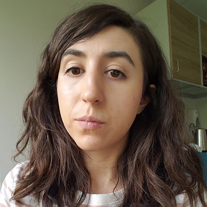
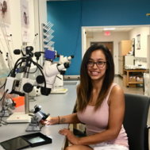
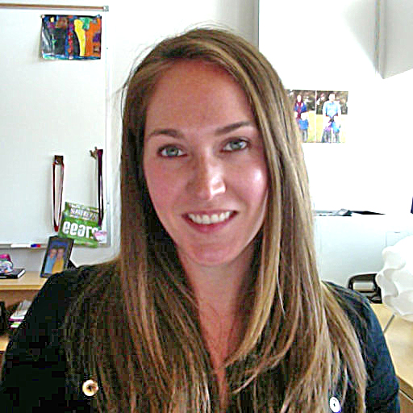
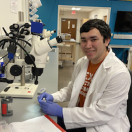
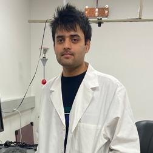
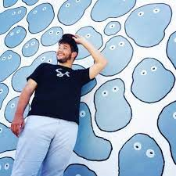

Current & ex trainees
Andrei Amatuni
andreiamatuni@utexas.edu
PhD student · Dept. of Psychology · Preston lab
Website
PhD student · Dept. of Psychology · Preston lab
Website
knowledge acquisition · concept learning · neural networks

RJ Antonello
rjantonello@utexas.edu
PhD student · Dept. of Computer Science · Huth lab
Publications
PhD student · Dept. of Computer Science · Huth lab
Publications
natural language processing · computational neuroscience

Megan Baker
mnbaker@utexas.edu
PhD student · Santacruz lab
Website · Publications
PhD student · Santacruz lab
Website · Publications
electrode manufacturing · carbon nanotube · primate

Logan Becker
lbecker95@utexas.edu
PhD student · Dept. of Neuroscience · Taillefumier lab
PhD student · Dept. of Neuroscience · Taillefumier lab
computational modeling · neural dynamics · statistical neuroscience

Giulia Berto
giulia.berto@austin.utexas.edu
PostDoc · Dept. of Psychology · Pestilli lab
Publications
PostDoc · Dept. of Psychology · Pestilli lab
Publications
neuroimaging · machine learning · data science

Zoe Boundy-Singer
zoebsinger@utexas.edu
PhD student · Dept. of Neuroscience · Goris lab
Publications
PhD student · Dept. of Neuroscience · Goris lab
Publications
electrophysiology · computational modeling · visual perception · confidence

Yin-Jui (Derek) Chang
derek706586@utexas.edu
PhD student · Santacruz lab
Website · Publications
PhD student · Santacruz lab
Website · Publications
BMI · GAN · computational neuroscience

Christine Coughlin
cacoughlin@utexas.edu
PostDoc · Dept. of Psychology · Preston lab
Website · Publications
PostDoc · Dept. of Psychology · Preston lab
Website · Publications
neurocognitive development · episodic memory · episodic future-thinking · learning · neuroimaging

Abhranil Das
abhranil.das@utexas.edu
PostDoc · Dept. of Psychology · Geisler lab
Website · Publications
PostDoc · Dept. of Psychology · Geisler lab
Website · Publications
physics · vision science · computational neuroscience · psychedelic science

Peyton Demetrovich
pdemetrovich@utmail.utexas.edu
PhD student · Dept. of Neuroscience · Colgin lab
Website
PhD student · Dept. of Neuroscience · Colgin lab
Website
Meg Donahue
mmdonahue@utexas.edu
PhD student · Dept. of Neuroscience · Colgin lab
PhD student · Dept. of Neuroscience · Colgin lab
electrophysiology · hippocampus · spatial cognition

Antonio Fernández
antonio.fernandez@utexas.edu
PostDoc · Dept. of Psychology · Pestilli lab
Website · Publications
PostDoc · Dept. of Psychology · Pestilli lab
Website · Publications
covert attention · computational neuroscience · neuroimaging
Sihang Guo
sguo19@utexas.edu
PhD student · Dept. of Neuroscience · Huth and Pestilli labs
Publications
PhD student · Dept. of Neuroscience · Huth and Pestilli labs
Publications
Anibal Sólon Heinsfeld
anibalsolon@utexas.edu
PhD student · Dept. of Computer Science · Pestilli lab
Website · Publications
PhD student · Dept. of Computer Science · Pestilli lab
Website · Publications
deep learning · brain imaging · open science
Enrique Contreras Hernandez
PostDoc · Santacruz lab
Publications
PostDoc · Santacruz lab
Publications
electrophysiology · neural coding · neuroprosthetics · spinal cord
Shailee Jain
shailee@cs.utexas.edu
PhD student · Dept. of Computer Science · Huth lab
Website · Publications
PhD student · Dept. of Computer Science · Huth lab
Website · Publications
computational neuroscience · machine learning · natural language processing
Grace Jeanpierre
PhD student · Dept. of Electrical and Computer Engineering · Santacruz lab
PhD student · Dept. of Electrical and Computer Engineering · Santacruz lab
deep brain stimulation
Satwant Kumar
satwant.dagar@gmail.com
PostDoc · Dept. of Psychology · Seidemann lab
Website · Publications
PostDoc · Dept. of Psychology · Seidemann lab
Website · Publications
systems neuroscience · computational vision · vision neuroscience

Dylan Le
dylanle@utexas.edu
PhD student · Dept. of Neuroscience · Wei lab
PhD student · Dept. of Neuroscience · Wei lab
computational neuroscience · spatial coding · cognitive maps · topology


Baowang Li
libaowang@utexas.edu
Research Associate · Dept. of Psychology · Priebe lab
Publications
Research Associate · Dept. of Psychology · Priebe lab
Publications
visual cortex · behavior · whole-cell · detection

Hung-Yun Lu
hungyun.lu@utexas.edu
PhD student · Dept. of Biomedical Engineering · Santacruz lab
Publications
PhD student · Dept. of Biomedical Engineering · Santacruz lab
Publications
dopamine · fast-scan cyclic voltammetry · primate

Salim M'jahad
mjahad@utexas.edu
PhD student · Dept. of Neuroscience · Seidemann lab
PhD student · Dept. of Neuroscience · Seidemann lab
visual perception · systems neuroscience · computational neuroscience · optogenetics · optical imaging

Neal W Morton
neal.morton@austin.utexas.edu
Research Associate · Dept. of Neuroscience · Preston lab
Website · Publications
Research Associate · Dept. of Neuroscience · Preston lab
Website · Publications
episodic & semantic memory · computational modeling · neuroimaging

Jens-Oliver Muthmann
ollimuh@utexas.edu
PostDoc · Dept. of Psychology · Goris lab
Website · Publications
PostDoc · Dept. of Psychology · Goris lab
Website · Publications

Andrea Nam
ajnam@utexas.edu
PhD student · Dept. of Neuroscience · Harris lab
PhD student · Dept. of Neuroscience · Harris lab
astrocytes · 3DEM · computational modeling
Ronan O'Shea
ronan_oshea@utexas.edu
PhD student · Dept. of Psychology · Priebe and Wei labs
Publications
PhD student · Dept. of Psychology · Priebe and Wei labs
Publications
vision · imaging · neural network models

Jagruti Pattadkal
jagruti@austin.utexas.edu
PostDoc · Dept. of Neuroscience · Priebe lab
Website · Publications
PostDoc · Dept. of Neuroscience · Priebe lab
Website · Publications
in-vivo · two-photon · intracellular
Katy Pilarzyk
kpilarzyk@utexas.edu
PostDoc · Dept. of Neuroscience · Harris lab
Publications
PostDoc · Dept. of Neuroscience · Harris lab
Publications
neuroscience · learning & memory · synaptic plasticity

Kimberly Ray
kimray@utexas.edu
Research Assistant Professor · Dept. of Psychology · Pestilli lab
Publications
Research Assistant Professor · Dept. of Psychology · Pestilli lab
Publications
cognitive neuroscience · fMRI · imaging


Emma Robson
emmarobson@utexas.edu
PostDoc · Dept. of Neuroscience · Colgin lab
Website
PostDoc · Dept. of Neuroscience · Colgin lab
Website
neuroscience · cell biology · physiology

Jayanth R T
jayanth.r.t@utexas.edu
PhD student · Dept. of Electrical & Computer Engineering · Colgin and Millan labs
Website · Publications
PhD student · Dept. of Electrical & Computer Engineering · Colgin and Millan labs
Website · Publications
spatial cognition · hippocampus · real-time decoding · computational modeling

Jason Samonds
samondjm@gmail.com
Research Associate · Dept. of Neuroscience · Priebe lab
Website · Publications
Research Associate · Dept. of Neuroscience · Priebe lab
Website · Publications
visual cortex · neurophysiology · inference · stereopsis · eye movements · autism
Stephen Sebastian
sebastian@utexas.edu
PhD student · Dept. of Psychology · Geisler lab
Website · Publications
PhD student · Dept. of Psychology · Geisler lab
Website · Publications

Mandi Severson
mseverson@utexas.edu
PhD student · Dept. of Neuroscience · Priebe lab
Website
PhD student · Dept. of Neuroscience · Priebe lab
Website
visual cortex · behavior
Hannah Stealey
PhD student · Santacruz lab
PhD student · Santacruz lab
traumatic brain injury · rodent · computational modeling · neuropsychiatric disorder

Pin Kwang 'PK' Tan
pktan.hq@gmail.com
PhD student · Dept. of Neuroscience · Seidemann and Wei labs
Website · Publications
PhD student · Dept. of Neuroscience · Seidemann and Wei labs
Website · Publications
visual perception · optical imaging · optogenetics · computational neuroscience
Aditya Vaidya
avaidya@utexas.edu
PhD student · Dept. of Computer Science · Huth lab
Website · Publications
PhD student · Dept. of Computer Science · Huth lab
Website · Publications
language · computational neuroscience

Calen Walshe
calen.walshe@gmail.com
PostDoc · Dept. of Psychology · Geisler lab
Website · Publications
PostDoc · Dept. of Psychology · Geisler lab
Website · Publications
visual neuroscience · cognitive science


Matt Whitmire
matt.whitmire@utexas.edu
PostDoc · Dept. of Neuroscience · Seidemann lab
Website · Publications
PostDoc · Dept. of Neuroscience · Seidemann lab
Website · Publications

Zhongxuan Wu
zhongxuanwu@utexas.edu
PhD student · Dept. of Neuroscience · Wei lab
PhD student · Dept. of Neuroscience · Wei lab
spatial navigation · cognitive function · computational modeling

Liu Yuezhang
lyz@utexas.edu
PhD student · Dept. of Neuroscience
Website · Publications
PhD student · Dept. of Neuroscience
Website · Publications
computational neuroscience · deep reinforcement learning · memory

Anqi Zhang
anqizhang@utexas.edu
PhD student · Dept. of Physics · Geisler lab
Website · Publications
PhD student · Dept. of Physics · Geisler lab
Website · Publications
vision science · statistical physics · computational neuroscience
Yi Zhao
PhD student · Dept. of Biomedical Engineering · Santacruz lab
Website
PhD student · Dept. of Biomedical Engineering · Santacruz lab
Website
local field potential · computational modelling · visual neurophysiology

Corey Ziemba
ziemba@utexas.edu
PostDoc · Goris lab
Publications
PostDoc · Goris lab
Publications
computational neuroscience · visual perception · decision-making